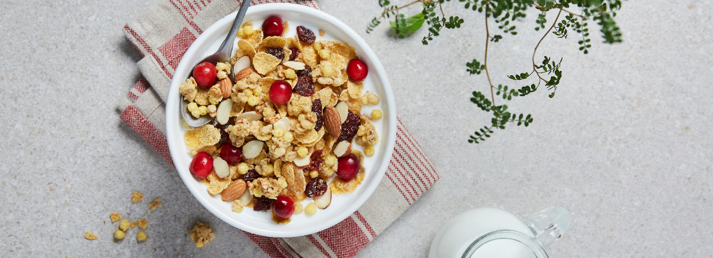
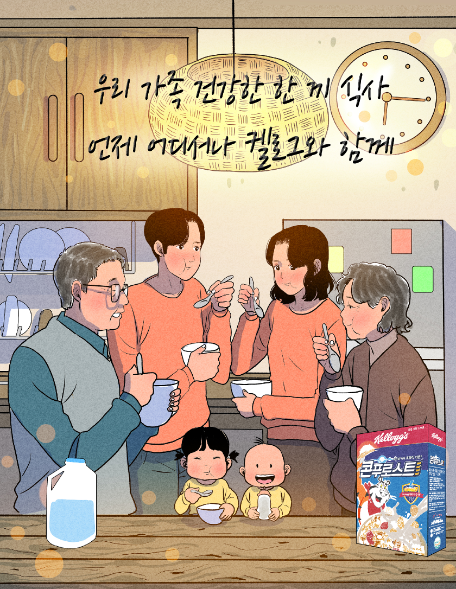

Better Days
Better Days
리얼 시리얼 캠페인

Real Cereal Campaign
시리얼은 "밥"이다!
- 농심켈로그는 시리얼이 단순히 쉽고 간단하게 섭취할 수 있는 간편대용식(CMR)이 아닌 밥처럼 식사로 충분한 맛과 영양을 골고루 갖춘 리얼 푸드라는 사실을 널리 알리기 위한 ‘리얼 시리얼 캠페인’을 펼치고 있습니다.
- ‘리얼 시리얼 캠페인’은 세계 최대 시리얼 기업인 켈로그가 지난 114년간 쌓아온 깊은 역사와 노하우를 바탕으로 시리얼에 대한 소비자들의 잘못된 인식을 바로잡고, 시리얼이 지닌 영양적인 가치와 맛있는 레시피를 알리기 위해 다각적으로 전개해오고 있는 활동입니다.
- 찌고 굽는 제조 과정, 일러스트로 담아낸 ‘씨앗에서 식탁까지’ 영상 공개
- 켈로그는 리얼 시리얼 캠페인의 일환으로 “엄선한 곡물을 찌고 구워 소비자들의 식탁에 진정한 한끼 식사로 오르기까지” 시리얼의 리얼한 여정을 감성적인 일러스트로 담은 ‘씨앗에서 식탁까지’ 영상을 소개했습니다. 이 영상은 특히 많은 소비자들의 “시리얼은 튀겨서 만든다”는 오해를 깨트리기 위해 찌고, 굽는 시리얼의 진짜 제조 과정을 알리는데 중점을 두었습니다.
- 시리얼 관련 유익한 정보부터 진정한 식사로 맛있게 즐기는 방법까지 제공
-
켈로그는 시리얼이 우리 몸에 필요한 탄수화물, 단백질, 지방, 비타민, 무기질 등 5대 필수 영양소를 한 그릇에 담은 진짜 음식, ‘리얼 푸드’라는 메시지를 일러스트레이션을 통해 시각적으로 알기 쉽게 전달 했습니다.
또한 유명 일러스트레이터 명민호 작가와 협업하여 “시리얼은 언제 어디서나 누구나 간편하고 맛있게 즐길 수 있다”는 메시지를 담은 인스타툰을 선보이기도 했습니다. 아울러 켈로그는 공식 블로그 및 뉴트리션 인스타그램을 통해 시리얼을 활용한 다양한 레시피를 공개하며 시리얼을 더욱 맛있게 즐길 수 있는 방법도 안내하고 있습니다.
켈로그는 앞으로도 소비자들이 시리얼에 담긴 풍부한 영양을 제대로 알고 건강하고 맛있는 식사로 선택할 수 있도록 ‘리얼 시리얼 캠페인’고 ---지속적으로 전개해 나갈 계획입니다.
